Dr Yue Li
Martin Centre for Architectural and Urban Studies
Department of Architecture
University of Cambridge
July 4, 2026
Traffic volume on a road underpins nearly every big decision about a city or a country:
Road transport is 86% of UK passenger-km.
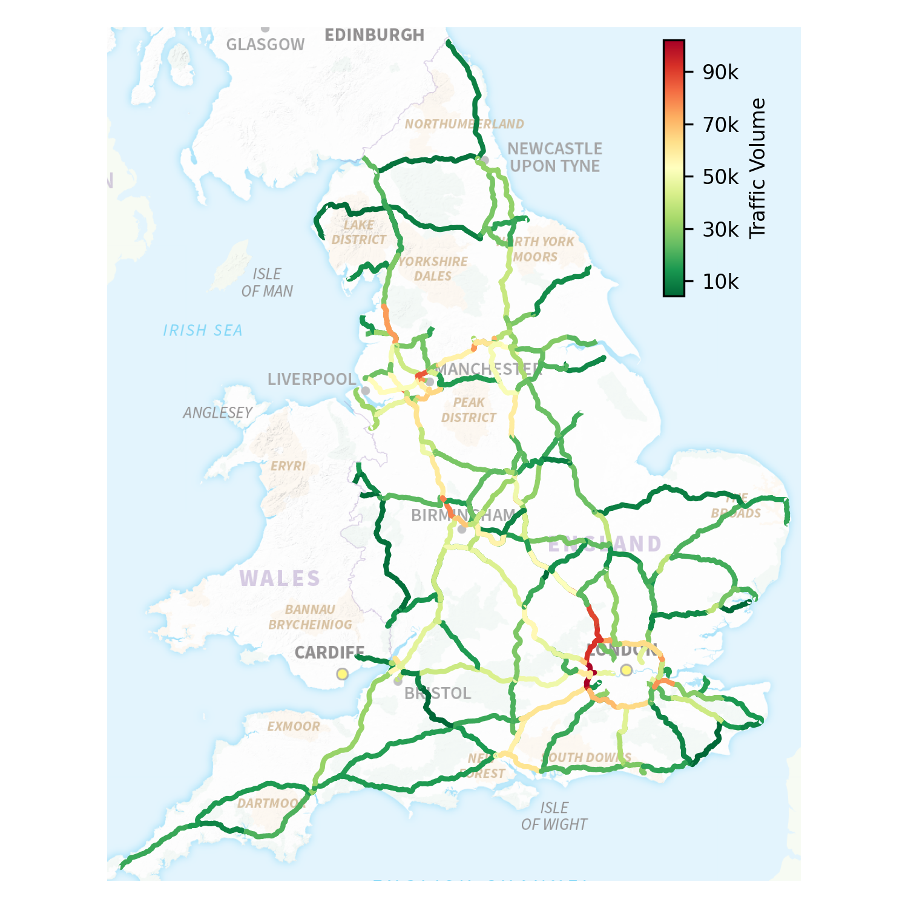
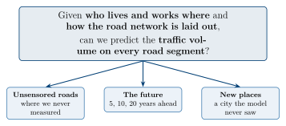
Four properties, together — not one at a time:
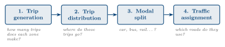
Break the impossible question — traffic on every road — into four smaller, human-readable questions, solved in sequence. Every commercial planning model is a version of this.
How many trips each zone produces and attracts, from measurable drivers:
By purpose
work · education · shopping · social & recreation · escort · health · return-home
By person / household
income · car ownership · household size & structure · socioeconomic status (SES)
By zone (aggregate)
land value · residential density · workers & cars per household
Estimate disaggregate trip rates, then aggregate to zone totals — productions $O_i$, attractions $D_j$.
1 · Linear regression
zone trips as a linear function of zone attributes (add SES, land use, …):
$$ O_i = \beta_0 + \beta_1\,\text{Pop}_i + \beta_2\,\text{Jobs}_i + \beta_3\,\text{Cars}_i + \beta_4\,\text{SES}_i + \dots $$2 · Category (cross-classification) analysis
average trip rate $t(h)$ per household category $h$:
$$ O_i = \sum_h N_i(h)\,t(h) $$3 · Frequency-choice logit
a discrete choice over how many trips $n$ a household makes:
$$ P(n) = \frac{e^{\,V_n}}{\sum_m e^{\,V_m}} $$Spread each origin's trips across destinations → the trip matrix $T_{ij}$.
| $D_1$ | $D_2$ | $D_3$ | $\Sigma=O_i$ | |
|---|---|---|---|---|
| $O_1$ | $T_{11}$ | $T_{12}$ | $T_{13}$ | $O_1$ |
| $O_2$ | $T_{21}$ | $T_{22}$ | $T_{23}$ | $O_2$ |
| $O_3$ | $T_{31}$ | $T_{32}$ | $T_{33}$ | $O_3$ |
| $\Sigma=D_j$ | $D_1$ | $D_2$ | $D_3$ | $T$ |
Gravity model
big, nearby zones trade more; a deterrence $f$ penalises cost $c_{ij}$:
$$ T_{ij} = A_i O_i\, B_j D_j\, f(c_{ij}) $$ $$ f(c_{ij})=e^{-\beta c_{ij}} $$Entropy-maximising: the most probable matrix consistent with $\sum_j T_{ij}=O_i,\ \sum_i T_{ij}=D_j,\ \sum_{ij}T_{ij}c_{ij}=C$. Keep the word deterrence.
Furness (bi-proportional) iteration
the balancing factors $A_i,B_j$ must satisfy both margins at once — so iterate:
What shifts the choice
Logit mode choice
the share of mode $k$ falls with its generalised cost $C^{\,k}_{ij}$:
$$ P^{\,k}_{ij} = \frac{e^{-\lambda\, C^{\,k}_{ij}}}{\sum_{m} e^{-\lambda\, C^{\,m}_{ij}}} $$$\lambda\!\to\!\infty$ ⇒ everyone picks the cheapest mode ("all-or-nothing").
Each mode bundles time, money and comfort into a common currency — its own $C^{\,k}_{ij}$:
$$ C^{\,k}_{ij} = a_1\, t^{\,k}_{\text{in-veh}} + a_2\, t^{\,k}_{\text{wait}} + a_3\,\text{fare}^k + a_4\,\text{park}^k + \dots $$this is the cost $c_{ij}$ that feeds the deterrence in distribution — and it differs by mode.
Composite cost across modes
one "best of all modes" cost (the log-sum): $K_{ij} = -\tfrac{1}{\lambda}\log \sum_k e^{-\lambda C^{\,k}_{ij}}$
$K_{ij}\le \min_k C^{\,k}_{ij}$; closes the loop back to distribution.
Load the OD matrix onto real routes and count the flow on each link.
All-or-nothing
put every OD flow on its single shortest path — simple, one pass.
But a road's cost rises with its flow. Realistic assignment needs an equilibrium: cost depends on flow, flow depends on cost.
User equilibrium — Wardrop
travellers know costs exactly; no one can cut their travel time by switching route.
⇒ every used route between $i,j$ has equal, minimal cost.
Stochastic user equilibrium
travellers act on perceived (noisy) costs; no one can cut their perceived cost by switching.
⇒ routes chosen probabilistically (logit / probit); UE is the zero-noise limit.
Both iterate load ⇄ update link costs until flows stop changing — the congested, self-consistent solution.
| Strengths |
|---|
| Interpretable at every step |
| Behaviourally grounded |
| Trusted by institutions |
| Transparent policy levers |
| Limitations |
|---|
| Steps assumed independent |
| Heavy manual calibration per city |
| Coarse zones, fixed impedance |
| Poor under genuinely new scenarios |
It gives us the vocabulary (generation, distribution, deterrence, assignment). Later I keep the vocabulary but let the computer learn each piece.
A model is a function from features $X$ to a label $y$:
$$ \hat{y} = f(X) $$We know $y$ where sensors exist; we want to fill in the rows where we do not.
| Pop | Jobs | Cars | Traffic |
|---|---|---|---|
| 12k | 8k | 0.9 | 41,000 |
| 3k | 2k | 1.3 | 9,500 |
| 27k | 19k | 0.7 | 88,000 |
| 6k | 5k | 1.1 | ? |
Fit the best straight line through the data:
$$ \hat{y} = \beta_0 + \beta_1 x_1 + \beta_2 x_2 + \dots $$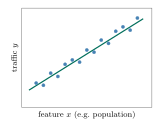
Real relationships bend and interact:
Regression can bend — with polynomial & spline terms and interaction terms — but you must choose the form by hand. The next models learn it.
Plain linear regression scores $R^2 \approx 0$ on unseen roads; the tools next reach 0.6–0.7.
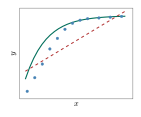
A tree splits the data with simple questions, carving the feature space into boxes.
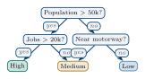
Grow hundreds of different trees (each on a random slice of data and features), then average them.
Random forest is one of our baselines later.
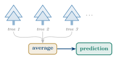
Build trees in sequence: each new tree predicts the errors the previous ones left behind.
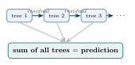
A neuron takes a weighted sum and bends it:
$$ h = \sigma\!\Big(\textstyle\sum_i w_i x_i + b\Big) $$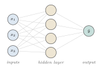
Learning = nudging every weight to reduce the error $L$.
Gradient descent: $w \leftarrow w - \eta\,\dfrac{\partial L}{\partial w}$ (a small step downhill)
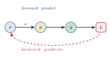
Everything so far assumes a tidy table of independent rows. But a country is not a table:
Specialised networks read each structure: CNN (grids), GAT (graphs), RNN / Transformer (sequences).
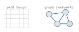
Slide a small learnable filter across the grid; each position gives one cell of a feature map.
The same operation that reads photographs (LeCun, 1998).
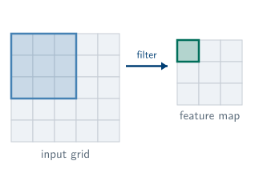
On a graph, each node updates itself from its neighbours — and learns how much to weight each one (the attention $\alpha$).
Attention is the same mechanism behind Transformers.
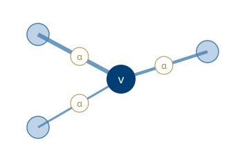
Walk through a sequence step by step, carrying a hidden state $h_t$ that summarises the past:
$$ h_t = f(h_{t-1},\, x_t) $$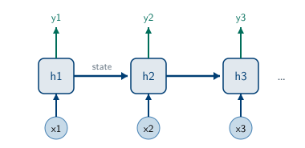
Drop the step-by-step loop: let every token attend to every other at once (self-attention).
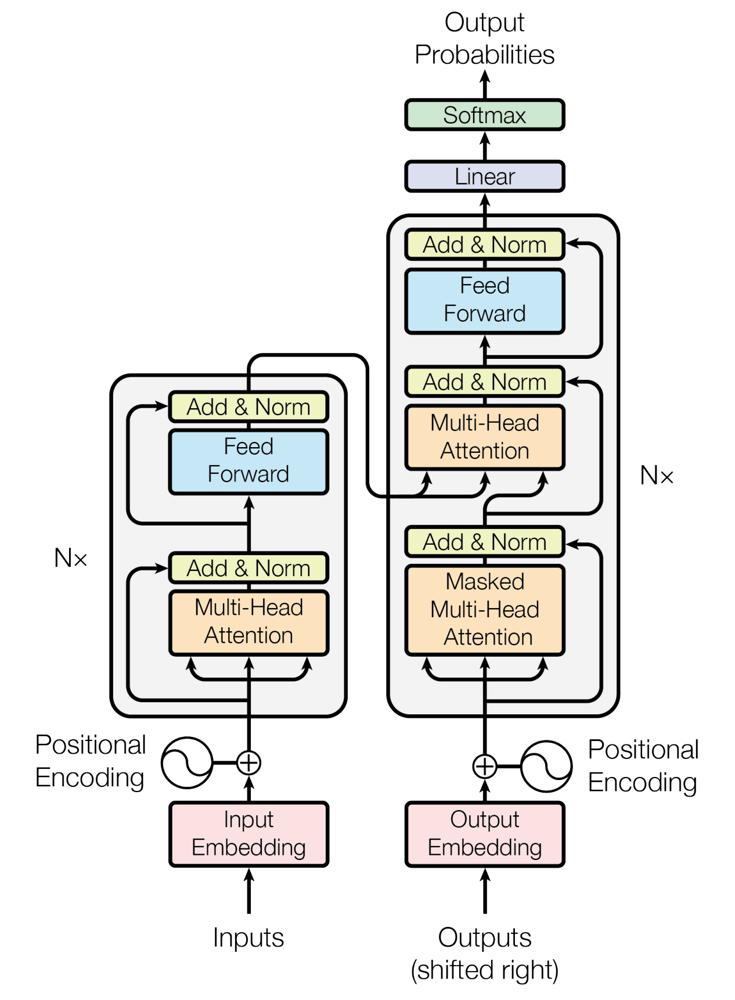
Today's spatiotemporal models stack the pieces from Part 3: an RNN (GRU) encodes the recent time series, a GAT mixes across the road graph (the filling), and an RNN decodes the next steps — e.g. ST-MetaNet.
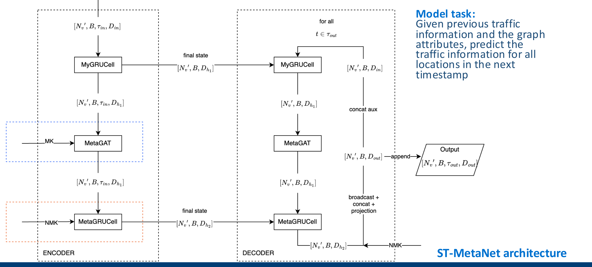
State-of-the-art short-term models predict the next 5–60 minutes well — because they mostly copy the last reading.
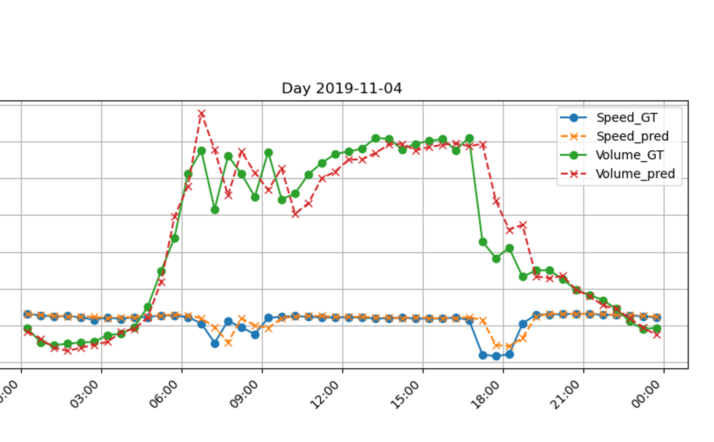
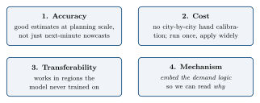
The same four properties from earlier — now framed as the gaps existing models leave open.
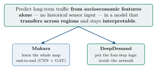
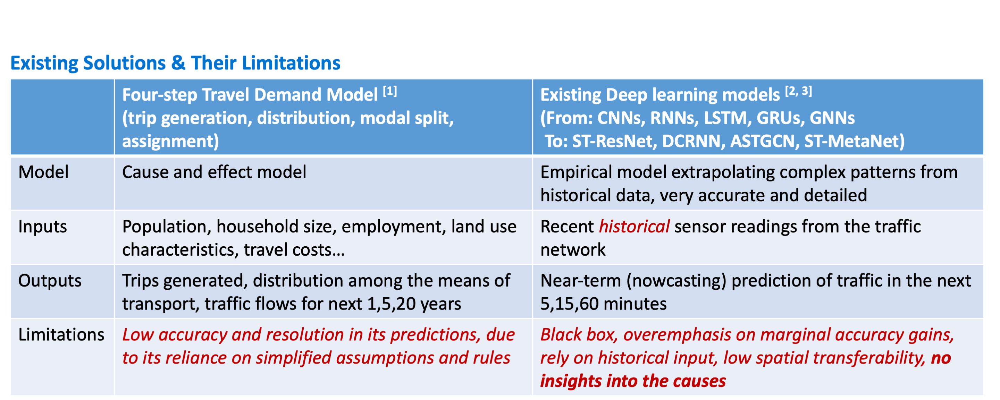
Two paradigms, opposite failures — neither is accurate, transferable and interpretable at once.
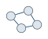
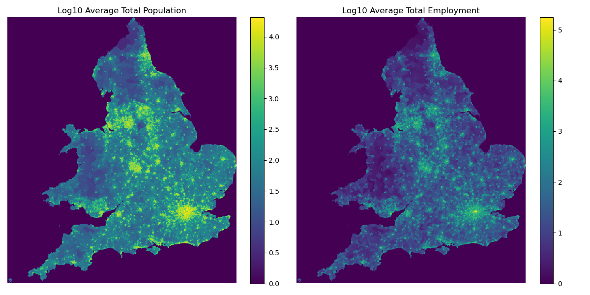
Features $=X$; sensor volumes $=y$. Train where we have sensors, predict everywhere else.
| Model input | Data source |
|---|---|
| Road network & geometry | OpenStreetMap · National Highways SRN |
| Population (age, sex) | ONS Census 2021 |
| Employment (by sector) | ONS BRES |
| Households & car ownership | ONS Census 2021 |
| Deprivation (income, employment) | IMD 2019 |
| Land use & points of interest | OpenStreetMap |
| Travel time / generalised cost | network shortest-path · Google Routes API |
| Traffic (ground-truth AADT) | National Highways TRIS |
All open or public data, harmonised to the LSOA and road-network geographies.
One sentence: predict traffic on every road from socioeconomic & network features alone, learned end-to-end — no historical sensor input.
It treats the whole demand-to-traffic pipeline as one learnable function:
$$ \hat{Y} = \text{Mukara}(\underbrace{G}_{\text{network}},\ \underbrace{X}_{\text{features}}) $$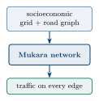
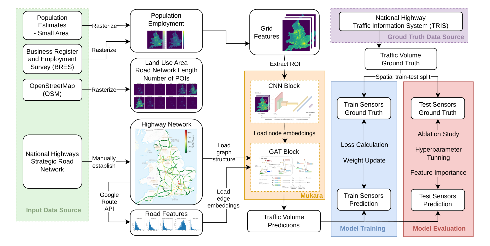
Grid features → CNN → node embeddings; road graph → GAT → per-edge traffic prediction.
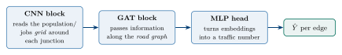
No new magic — Mukara is CNN (spatial context) + GAT (network context) + a regression head, trained together by gradient descent.
CNN block
131×115×2 grid (population & employment) → 8 conv layers, 7×7 kernels, BatchNorm + ReLU → node embedding.
GAT block
edge-aware attention over the road graph; edge features (distance, speed) shape the weights → per-edge prediction.
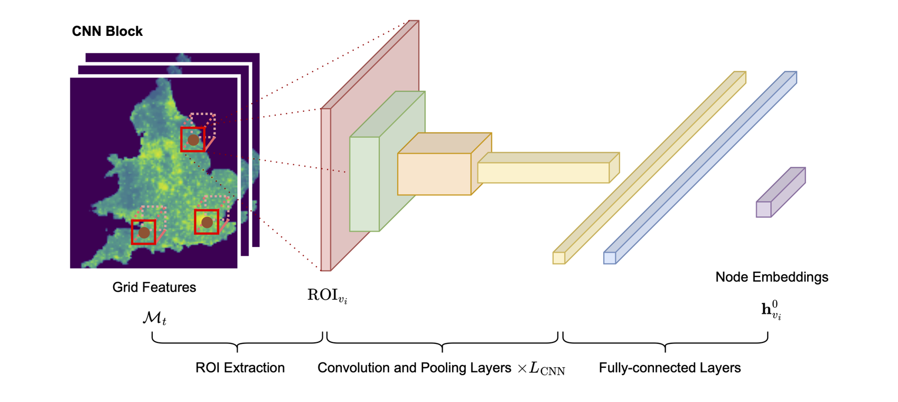
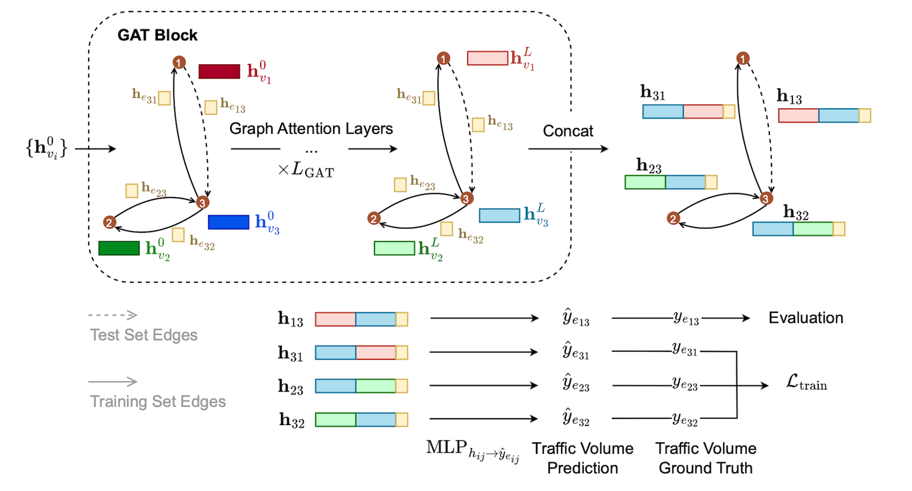
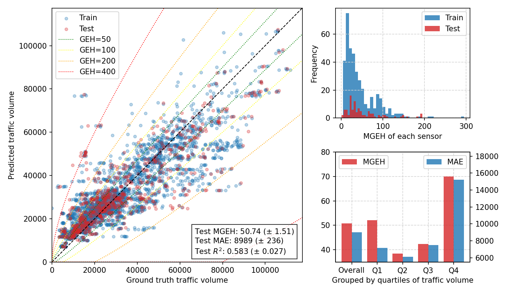
$R^2 = 0.58$
MAE $\approx 9{,}000$ veh/day
(unseen test roads)
Mukara predicts well, but it is still a black box:
This is exactly what DeepDemand fixes.
One sentence: take the four-step vocabulary and make each component a learnable part of a single, end-to-end differentiable model.
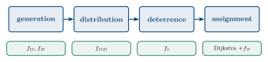
Theory decides the structure; data fills in the functions.
| Four-step concept | DeepDemand component |
|---|---|
| Trip generation & attraction | node encoders $f_O, f_D$ (small neural nets) |
| Trip distribution | OD interaction scorer $f_{OD}$ |
| Impedance / deterrence | learnable travel-time curve $f_t$ |
| Traffic assignment | competitive Dijkstra selects the OD pairs |
| Congestion / equilibrium | monotonic scaling $f_S$ |
Grow two searches from the road's two ends (a "competitive" shortest-path race):
Anchors each prediction to the demand that causes it — the model's "assignment".
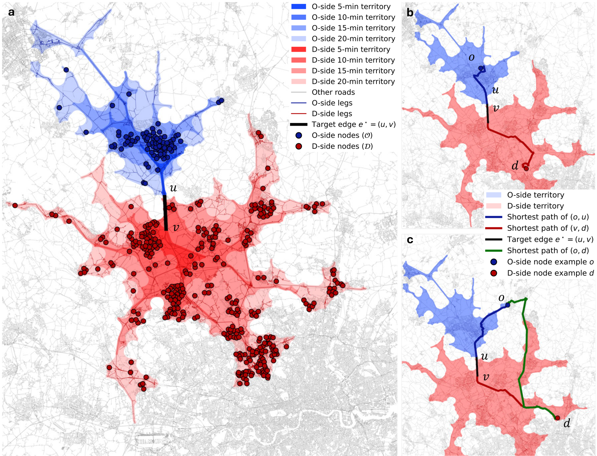
A design choice, justified by real travel behaviour (National Travel Survey):
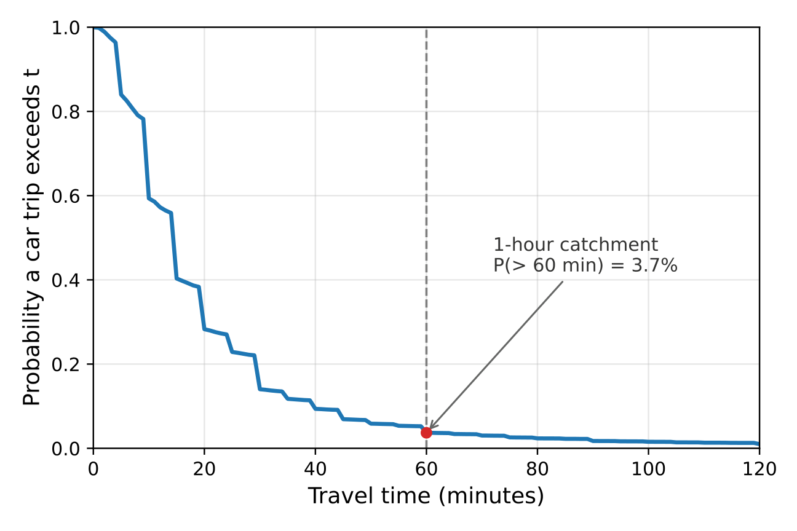
For each surviving OD pair, combine two learned quantities and sum:
$$ \hat{y}_{e^*}=\gamma\, f_S\!\Big(\!\!\sum_{(o,d)\in\mathcal P^*}\!\! \underbrace{s_{od}}_{\text{dist.}}\cdot \underbrace{p_{od}}_{\text{deter.}}\Big) $$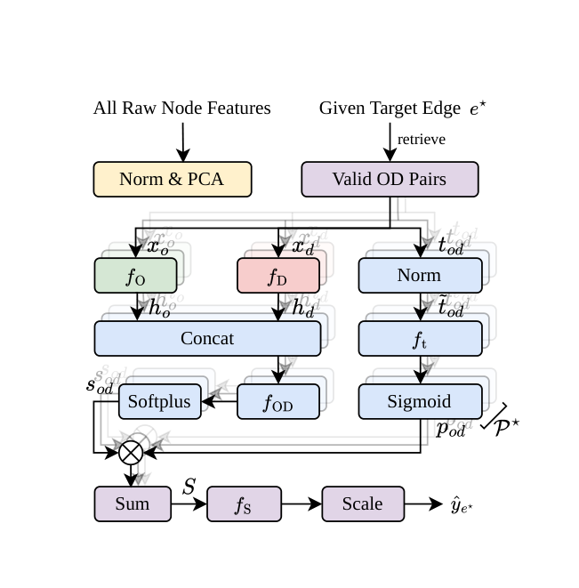
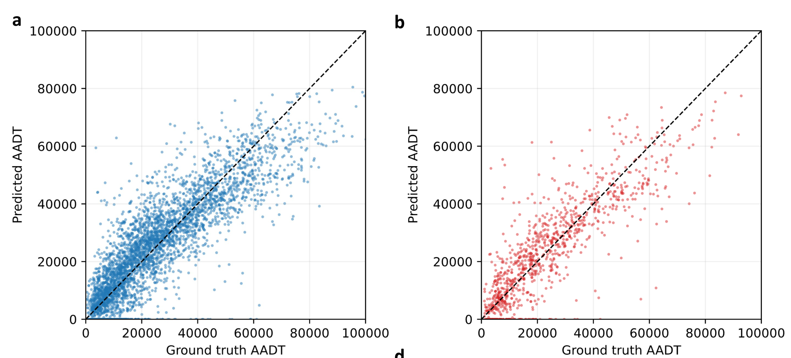
$R^2 = 0.71$ (random test)
$R^2 = 0.65$ (whole regions held out)
MAE $\approx 7{,}600$ veh/day
The demanding test: hold out whole regions, train on the rest, predict the unseen region.
The property short-term deep learning simply does not have.
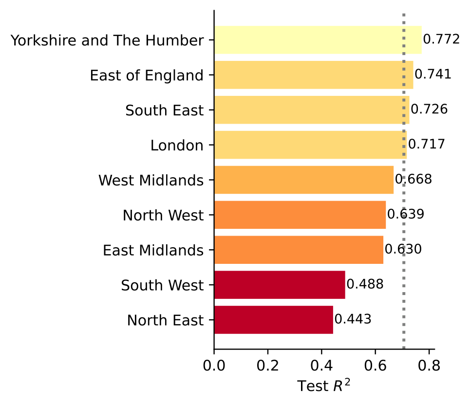
| Model | Random 5-fold CV | Spatial CV | ||||||
|---|---|---|---|---|---|---|---|---|
| MGEH | MAE | wMAPE | $R^2$ | MGEH | MAE | wMAPE | $R^2$ | |
| Mean | 96.8 | 15171 | 60.1 | −0.00 | 97.5 | 15402 | 60.4 | −0.10 |
| Linear | 89.7 | 14350 | 56.1 | −0.00 | 93.2 | 14956 | 57.5 | −0.12 |
| Ridge | 89.4 | 14141 | 55.7 | 0.06 | 93.2 | 14876 | 57.4 | −0.09 |
| Gravity | 65.5 | 9379 | 37.2 | 0.55 | 66.5 | 9521 | 37.4 | 0.49 |
| RF (pooled) | 90.3 | 14195 | 56.2 | 0.11 | 92.0 | 14534 | 56.5 | 0.01 |
| Random forest | 57.7 | 8659 | 34.3 | 0.62 | 66.4 | 10318 | 40.3 | 0.45 |
| XGB (pooled) | 90.0 | 14141 | 56.0 | 0.12 | 92.0 | 14514 | 56.3 | 0.00 |
| XGBoost | 53.2 | 7975 | 31.6 | 0.66 | 63.2 | 9776 | 38.3 | 0.46 |
| LGBM (pooled) | 89.6 | 14042 | 55.6 | 0.13 | 91.9 | 14493 | 56.2 | 0.01 |
| LightGBM | 51.1 | 7652 | 30.3 | 0.68 | 61.3 | 9487 | 37.1 | 0.48 |
| GAT | 72.4 | 11102 | 44.0 | 0.40 | 74.4 | 11552 | 45.0 | 0.32 |
| Mukara$^{\dagger}$ | 50.7 | 8989 | — | 0.58 | 57.6 | 9955 | — | 0.52 |
| DeepDemand | 56.1 | 7567 | 30.0 | 0.71 | 58.0 | 7885 | 31.1 | 0.65 |
(pooled) = tabular model without OD extraction. The OD extraction lifts tabular $R^2$ from ≈0.11 to ≈0.65 (the structural prior); DeepDemand leads on random CV and widens its lead under spatial CV.
The model learns its own deterrence curve — the four-step model's $f(c_{ij})$, but discovered from data, not assumed.
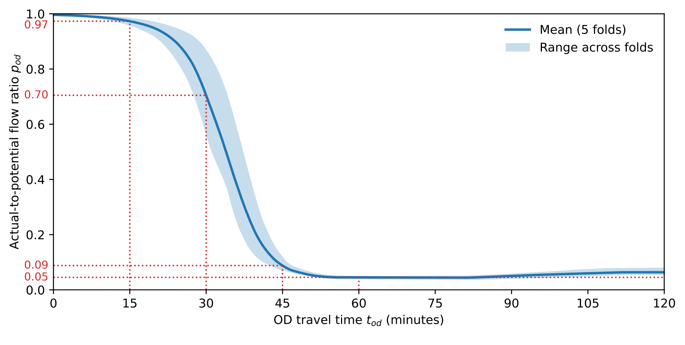
SHAP attribution opens the box: which features push traffic up or down, and where.
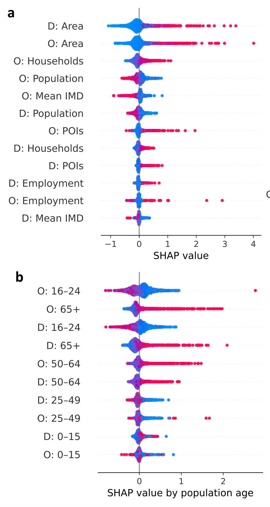
The learned origin–destination "pull" can be mapped, revealing polycentric structure aligned with real employment hubs and airports.
The bridge back to planning: high-demand corridors, spatial mismatches, where new capacity would matter.
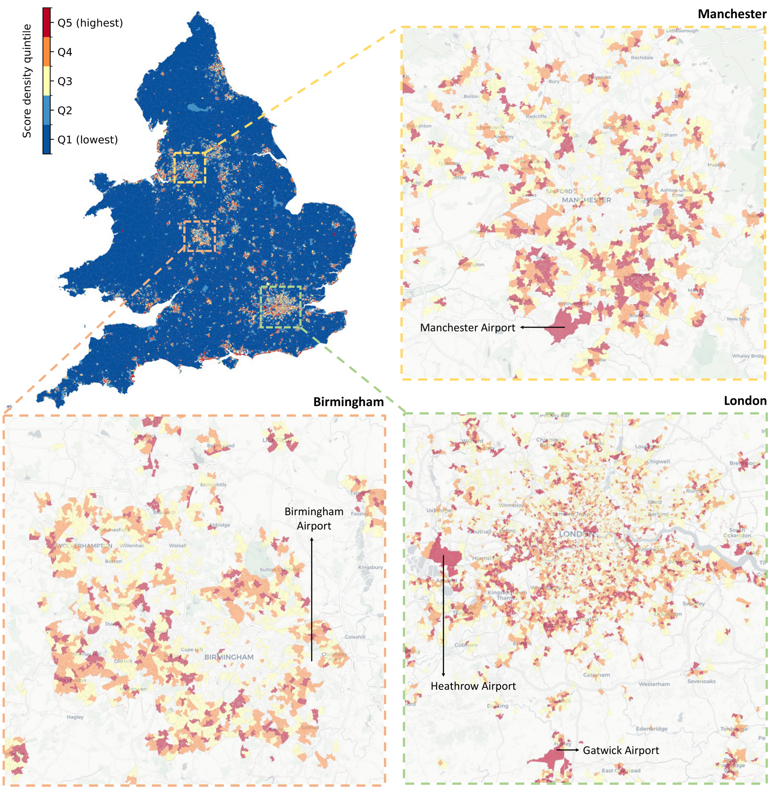
The arc: regression → trees → neural nets → CNN/GAT → Mukara (accurate, from features) → DeepDemand (accurate and transferable and interpretable).
Complement, not replacement. These models are not a rival to established pipelines (four-step, MATSim). They fill the gap those tools leave: fast, data-sparse, unmonitored, national-scale early screening.
Mukara3 asks the inverse question: infer the latent origin–destination flows behind the counts.
Vision: an interpretable model that learns from incomplete, biased observations — a digital twin for counterfactual policy.
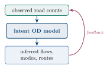
Questions & discussion
Dr Yue Li · Martin Centre for Architectural and Urban Studies, University of Cambridge